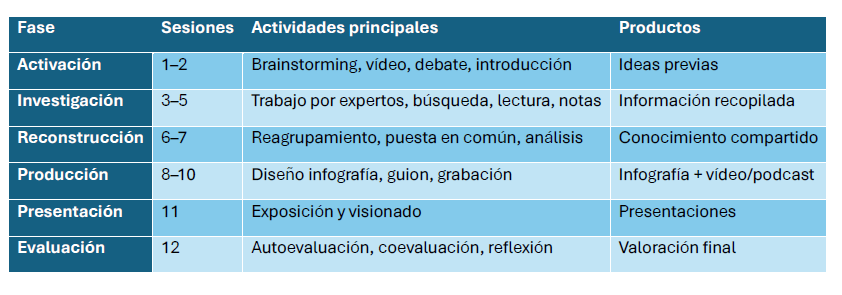

Secuenciación
La secuenciación de esta situación de aprendizaje se desarrolla a lo largo de 12 sesiones organizadas en seis fases. En la fase de activación (sesiones 1 y 2), se introducen los contenidos mediante un brainstorming sobre estructuras gramaticales, acompañado de un vídeo y un debate que deriva en la presentación del proyecto "Life then, now and tomorrow".
En la fase de investigación (sesiones 3 a 5), el alumnado se organiza en grupos de expertos de 5 países diferentes de la Commonwealth centrados en tres ámbitos: vida en el pasado, vida actual y predicciones de futuro. Durante esta fase realizan tareas de búsqueda de información, lectura comprensiva y toma de notas.
Posteriormente, en la fase de reconstrucción (sesiones 6 y 7), se reorganizan en grupos heterogéneos para compartir la información, compararla y analizarla de manera conjunta.
En la fase de producción (sesiones 8 a 10), elaboran dos productos: una infografía digital interactiva y una presentación con vídeo. Para ello, diseñan, organizan la información, redactan un guion, ensayan y realizan la grabación.
En la sesión 11 se lleva a cabo la presentación de los proyectos, incluyendo la exposición y el visionado o audición de los trabajos.
Finalmente, en la sesión 12, se realiza la evaluación mediante procesos de autoevaluación, coevaluación y reflexión final.

Presentación del reto
El alumnado analizará cómo ha evolucionado la vida en distintos países de la Commonwealth en tres dimensiones:
🕰️ Then (pasado)
🌍 Now (presente)
🔮 Tomorrow (futuro)
🧠 PREGUNTA GUÍA DEL PROYECTO: How has life changed in this country from the past to the present, and what will it be like in the future?
PAÍSES PROPUESTOS (5 grupos de 3 miembros cada uno)
1. Reino Unido/ United Kingdom
2. India /India
3. Canadá/ Canada
4. Sudáfrica/ South Africa
5. Australia/ Australia